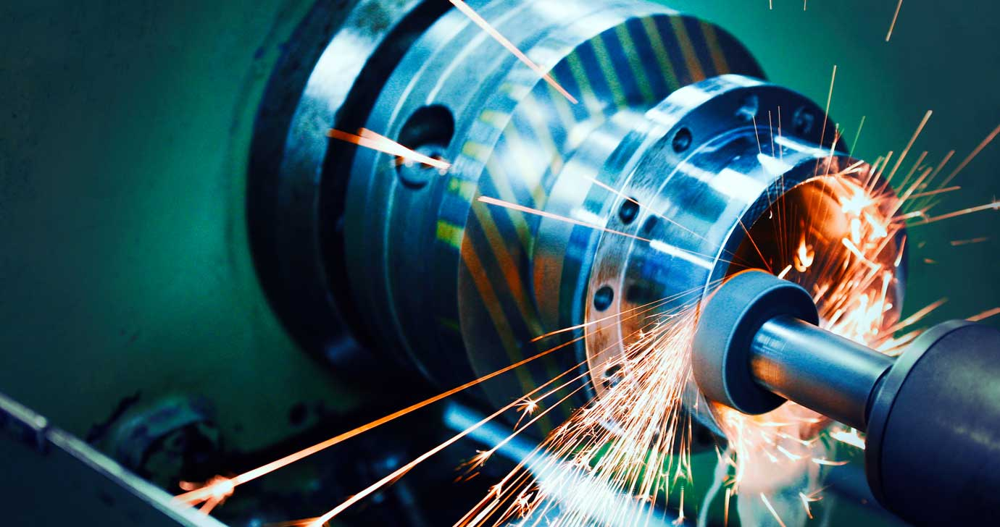

Eloxieren
Elektrochemische Veredelung, v. a. für Aluminium.
Hochglanzfinish, Korrosions- und Verschleißschutz – im Rahmen unseres Rundum-Service bieten wir Ihnen die passende galvanische und thermische Oberflächenveredelung für Ihre Präzisionsteile.

Lieferant & Lösungspartner
Individuelle Oberflächenbehandlung nach Ihren Wünschen
Prüfung & Beratung Ihrer technischen Vorgaben
Galvanische & thermische Oberflächenbehandlung
Baugruppenmontage
Verpackungs-Service
Beim Verzinken wird eine Zinkschicht auf die Oberfläche des Werkstücks aufgetragen, um es vor Korrosion zu schützen. Varianten wie Blau, Gelb, Schwarz, Zink-Eisen, Dickschicht und Oliv bieten unterschiedliche ästhetische Eigenschaften und Korrosionsschutzgrade. Insbesondere die CrVI-freien Verfahren sind umweltfreundlicher und erfüllen moderne Umweltstandards.
Zink-Nickel-Beschichtungen bieten einen verbesserten Korrosionsschutz gegenüber reinem Zink. Transparente oder schwarze Varianten ermöglichen die Anpassung an ästhetische Anforderungen bei gleichzeitig höherer Widerstandsfähigkeit gegenüber Umwelteinflüssen.
Eine Nickelbeschichtung wird auf die Oberfläche aufgebracht. Sie verbessert die Korrosionsbeständigkeit und verleiht dem Werkstück eine glänzende, dekorative Oberfläche.
Mit einer sauren Lösung werden Oxide und Verunreinigungen entfernt. Das bereitet das Material für weitere galvanische Beschichtungen vor und verbessert deren Haftung.
Nach dem Beschichten kann das Werkstück versiegelt werden, um Haftung und Schutz der Beschichtung zu erhöhen – wichtig für die Haltbarkeit.
Die Kupferbeschichtung dient oft als Basis für weitere Beschichtungen, verbessert die Leitfähigkeit und bietet zusätzlichen Korrosionsschutz.
Eine Chromschicht verleiht dem Material dekorativen Glanz und verbessert die Korrosionsbeständigkeit.
Durch kontrollierte Oxidation entsteht eine dunkle, schützende Schicht, die die Korrosionsbeständigkeit verbessert und ein charakteristisches Aussehen verleiht.
Wärmebehandlung unter Luftabschluss vermeidet Oxidation der Oberfläche – für verbesserte Oberflächenhärte und höhere Verschleißfestigkeit, insbesondere bei hochlegierten Werkstoffen.
Stickstoff diffundiert in die Oberfläche und bildet eine Nitridschicht, die Härte und Verschleißfestigkeit erhöht – ideal für hoch beanspruchte Bauteile.
Wie Gasnitrieren, zusätzlich wird Kohlenstoff eingebracht – kombinierte Härtung und Kohlenstoffanreicherung für bessere mechanische Eigenschaften.
Erhitzen auf eine bestimmte Temperatur und langsames Abkühlen reduziert Spannungen, verbessert die Gefügestruktur und optimiert die Härte nach Härtungsprozessen.
Ein Salzbad bringt Stickstoff und Kohlenstoff in die Oberfläche ein – besonders hohe Verschleißfestigkeit und Korrosionsbeständigkeit.
Erwärmen in kontrollierter Atmosphäre und rasches Abkühlen steigert Härte und Zähigkeit. Vergüten ermöglicht gezielte Anpassung von Härte und Festigkeit.
Kohlenstoff wird in die Oberfläche eingebracht für eine besonders harte Schicht; Carbonitrieren ergänzt Stickstoff für noch höhere Härte und Verschleißfestigkeit.
Elektrochemische Veredelung, v. a. für Aluminium.
Dünnschicht-Korrosionsschutz.
Kathodische Tauchlackierung.
Vorbeschichtung zur Schraubensicherung.
Schützende Spezialbeschichtung.
Bei der Anfertigung von hochwertigen CNC-Drehteilen ist es mit dem Zerspanen oft nicht getan. Viele Kunden benötigen weitere Leistungen, um die Teile unter besonderen Umweltbedingungen einsetzen zu können. Die Oberflächenbehandlung von Drehteilen hat somit sowohl eine optische als auch eine technische Komponente.
Hochglanzfinish und Schutz vor Korrosion und Verschleiß gehen oft Hand in Hand. In unserem Netzwerk haben wir als Lieferant für hochwertige Drehteile selbstverständlich die Möglichkeit, Ihnen im Rahmen unseres Rundum-Service die adäquate Lösung für die Oberflächenveredelung Ihrer Präzisionsdrehteile anzubieten.
Welche Art von Veredelung infrage kommt, hängt zum einen vom Ausgangsmaterial ab und zum anderen von den gewünschten Eigenschaften bzw. dem Umfeld, in dem die Drehteile ihren Dienst verrichten sollen.
Alles, was wir von Ihnen für die Umsetzung benötigen, sind die entsprechenden technischen Zeichnungen sowie alle Angaben zu den gewünschten Materialeigenschaften und den projektierten Einsatzgebieten. Daraufhin bieten wir Ihnen eine Lösung mit dem passenden Verfahren, die Ihren Anforderungen genau entspricht.
Schicken Sie uns Zeichnung und Vorgaben – wir empfehlen das passende Verfahren und wickeln alles aus einer Hand ab. In der Regel melden wir uns zeitnah.
Kurt Mager Solutions GmbH & Co. KGTeileart, Werkstoff, Oberfläche & Zeichnung – in 2 Minuten zur angebotsreifen Anfrage.
Anfrage konfigurieren 0741 / 28 00 14-0